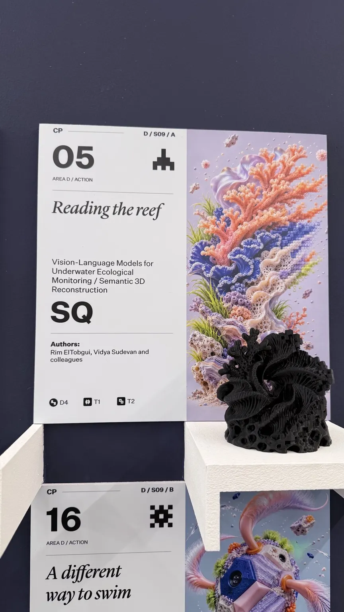
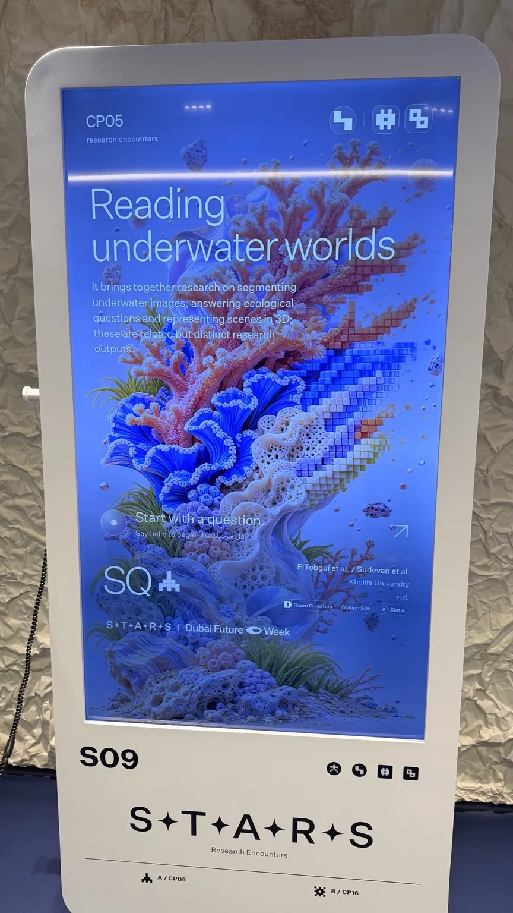
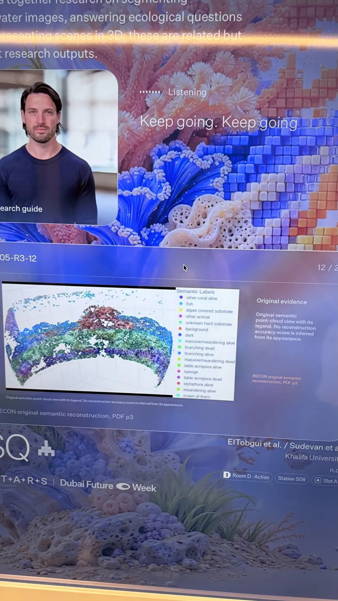
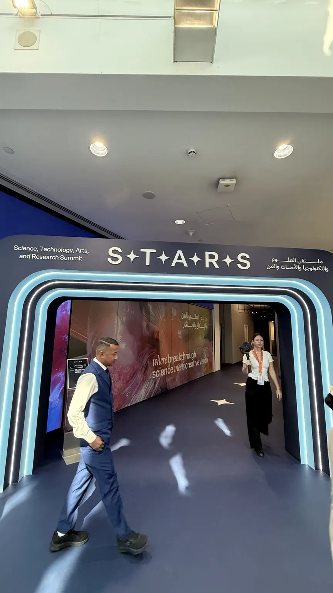

Reading the reef at Dubai Future Week
At the Science, Technology, Arts, and Research Summit (STARS), the Reading the reef exhibit brought together two Khalifa University projects. SeaQuery uses measurements from segmented reef images to answer ecological questions. The companion work by Vidya Sudevan and colleagues reconstructs underwater scenes in 3D and labels their features.
Read the SeaQuery paper overview



